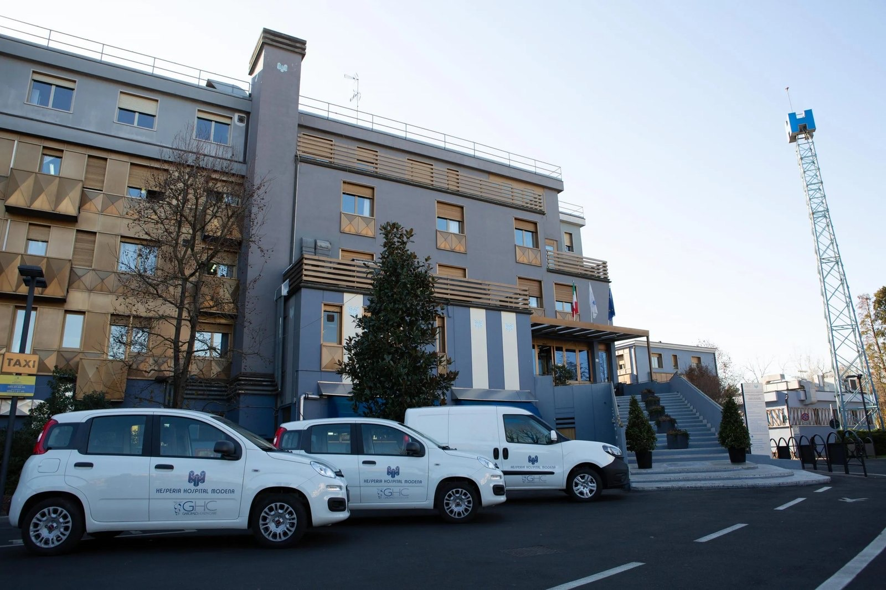

Convenzioni e partnership
Costruiamo insieme nuovi percorsi di cura.
Una rete sanitaria in otto regioni, un referente unico e un metodo chiaro per costruire convenzioni con compagnie assicurative, fondi, aziende, enti e istituzioni.

Da dove vuoi iniziare
Quattro profili. Un solo interlocutore.
Ogni partnership nasce da un bisogno diverso. Scegli il profilo che ti rappresenta: trovi percorso, ambiti di collaborazione e contatti diretti.
Il processo completoPerché il Gruppo GHC
Una rete solida, una relazione diretta.
Non solo strutture: un Gruppo quotato su Euronext STAR Milan, con presidi accreditati, competenze cliniche e un presidio di compliance che accompagna ogni accordo.
Una rete, otto regioni
31 strutture con scheda in 8 regioni e 24 città: ospedali, case di cura, riabilitazione, diagnostica, ambulatori, salute mentale e terme.
Competenze cliniche
75 servizi in 11 aree specialistiche, con équipe e tecnologie dedicate ai percorsi di cura.
Solidità e compliance
Un Gruppo quotato su Euronext STAR Milan, con presidi accreditati e un approccio rigoroso a privacy, sicurezza e qualità.
Un referente unico
Un interlocutore per la rete, non una giungla di centralini: coordiniamo il confronto con le strutture coinvolte.
Come funziona
Dalla prima email all’accordo attivo.
Un percorso trasparente, con tempi e responsabilità chiare. Ogni passaggio ha un referente e un risultato verificabile.
Tutti i dettagli del processo-
01
Primo contatto
2 giorni lavorativiCi racconti chi sei, quali territori ti interessano e quale bisogno vuoi risolvere. Ti risponde un referente dedicato.
-
02
Analisi dei bisogni
1–2 settimaneMettiamo a fuoco profilo, bacino di utenti, aree cliniche e priorità. Verifichiamo insieme la copertura della rete.
-
03
Proposta su misura
2–3 settimaneCostruiamo la proposta: strutture, servizi, percorsi di accesso e modalità di collaborazione.
-
04
Definizione e verifica
In base all’accordoCondividiamo condizioni, responsabilità e aspetti di compliance, privacy e sicurezza. Ogni accordo è verificato prima dell’attivazione.
-
05
Attivazione e monitoraggio
ContinuoAttiviamo i canali, informiamo le strutture e misuriamo l’andamento con un confronto periodico.
Primo riscontro entro 2 giorni lavorativi.
Verifica copertura
La struttura giusta, il contatto giusto.
Un percorso guidato per individuare la struttura e capire a chi rivolgersi. La conferma della copertura resta in capo alla struttura o al fondo.
Apri lo strumento completoStrumento di orientamento
Trova la struttura. Poi verifica con il centro.
Seleziona la regione e la struttura: vedrai i contatti diretti e lo stato dell’accordo istituzionale dichiarato nella scheda ufficiale. La copertura assicurativa va sempre confermata con la struttura o con il tuo fondo.
Inizia da una regione
Lo strumento ti mostra la struttura, i contatti e le informazioni utili. Non certifica la copertura: quella conferma arriva sempre dal centro o dal tuo fondo.
Convenzioni attive
Accordi reali, territorio per territorio.
26 strutture con accreditamento o convenzione dichiarati nelle schede ufficiali, in 8 regioni. Consulta l’elenco completo e verifica lo stato di ogni struttura.
Tutte le convenzioni attiveAccordi attivi per regione
Una struttura per regione
Lo stato riportato è quello dichiarato nella scheda ufficiale della struttura. Per l’operatività aggiornata, contatta il centro.
Domande frequenti
Le risposte, prima delle domande.
Tempi, requisiti, coperture e privacy: i punti che contano per valutare una collaborazione.
Chi può richiedere una convenzione con il Gruppo?
Compagnie assicurative, fondi sanitari, casse di assistenza, aziende, enti del terzo settore, associazioni, fondazioni, ordini professionali e istituzioni. La richiesta viene valutata in base al profilo, ai territori e alle esigenze sanitarie.
Quanto tempo serve per attivare una convenzione?
Il primo riscontro arriva entro 2 giorni lavorativi. L’analisi e la proposta richiedono in genere da due a quattro settimane; i tempi di definizione dipendono dalla complessità dell’accordo e dai passaggi di verifica necessari.
Quali strutture possono essere incluse?
La rete comprende 31 strutture con scheda in 8 regioni: ospedali, case di cura, poliambulatori, centri diagnostici, riabilitazione, salute mentale, hospice, RSA e terme. La copertura viene definita struttura per struttura, in base ai servizi e agli accordi disponibili.
Come si verifica se un assistito è coperto?
La copertura dipende dalla polizza, dal fondo o dall’accordo e può variare nel tempo. Il sito mette a disposizione uno strumento per individuare la struttura e i contatti corretti, ma la conferma va sempre richiesta alla struttura stessa o al proprio fondo.
È possibile limitare l’accordo ad alcune strutture o territori?
Sì. La proposta viene costruita sulle esigenze del partner: si può partire da una singola struttura, da una regione o da una tipologia di prestazione, per poi estendere l’accordo nel tempo.
Quali dati servono per iniziare?
Sono sufficienti il profilo del partner, un referente, i territori di interesse e una stima del bacino di utenti. Informazioni più precise su volumi, servizi e tempistiche aiutano a formulare una proposta più mirata.
Il Gruppo GHC
Una convenzione non è un modulo. È una relazione.
Raccontaci il tuo profilo, i territori e le persone che vuoi raggiungere. Ti rispondiamo con una prima valutazione e un referente dedicato.
Preferisci parlare con noi? +39 06 684891
